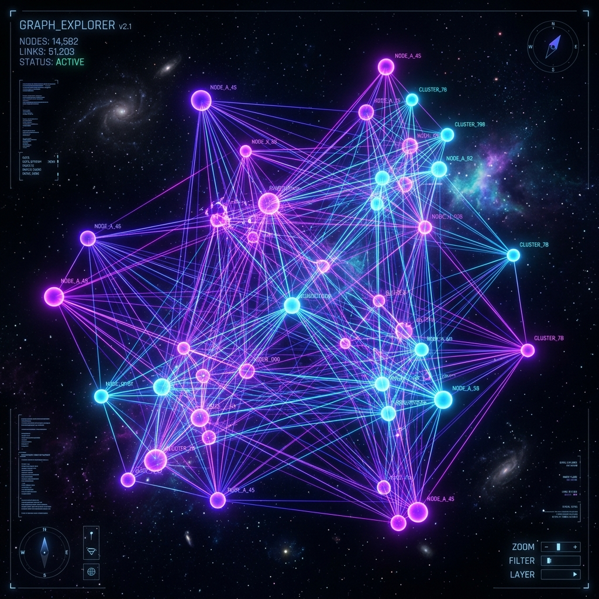
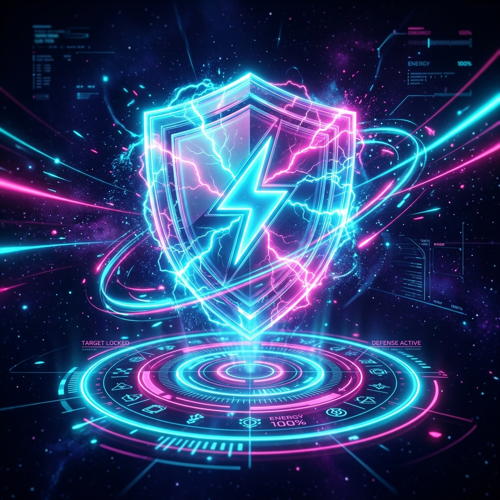
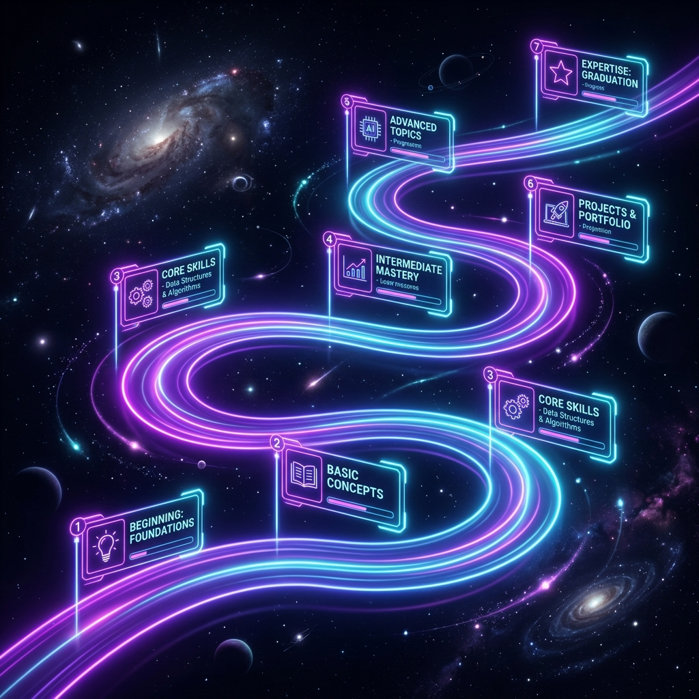

Learn Anything. Retain Everything.
An AI-powered adaptive learning studio — 5 tools, one platform.
of what students learn is forgotten within a week.
Passive reading, static videos, and cramming don't work.
We needed something that actually adapts to the learner.
NeuroLearn combines proven learning science with generative AI to create a personalised, active learning experience for any topic.





AI generates a tailored explanation across 5 styles: ELI5, Scholar, Technical, Storytelling, and Analogy.
Multi-modal delivery improves retention by up to 4×.
AI maps every concept, prerequisite, and relationship as an interactive D3 force graph. Click any node to inspect definitions and trace learning paths.
Write your own explanation. AI scores your understanding 0–100% and pinpoints the exact gaps — then tells you exactly what to study next.
AI generates 5 questions calibrated to your Zone of Proximal Development. After completion: a Mastery Score Card with personalized study recommendations.
Enter any learning goal. AI generates a personalized week-by-week curriculum with spaced repetition built in. One-click export as a text file.
Structured plans increase completion by 2×.
Powered by AI
Multi-modal AI
learning tools
with roadmaps
Any subject
Built with D3.js, Generative AI, and proven learning science to solve the hardest problem in education — actually remembering what you learn.